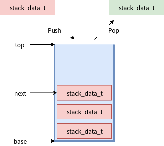

数据传递-堆栈¶
使用¶
API¶
void k_stack_init(struct k_stack stack, stack_data_t buffer, u32_t num_entries);
作用：初始化一个stack，stack的内存由使用者分配
stack: 被初始化的stack
buffer: stack使用的内存
num_entries：stack的成员数量
__syscall s32_t k_stack_alloc_init(struct k_stack *stack, u32_tnum_entries);
作用：初始化一个stack，stack使用的内存从thread pool分配
stack: 被初始化的stack
num_entries：stack的成员数量
返回值: 0表示初始化成功
int k_stack_cleanup(struct k_stack* stack);
作用：释放k_stack_alloc_init中为stack分配的内存
stack: 操作的stack
返回值: 0表示free成功，如果有pop在等待数据时会返回非0
__syscall int k_stack_push(struct k_stack *stack, stack_data_t data);
作用：压栈
stack：被压栈的stack
data: 要push的数据
返回值：push成功返回0
__syscall int k_stack_pop(struct k_stack *stack, stack_data_t* data, s32_t timeout);
作用：出栈 stack：被出栈的stack
data: pop的数据
timeout: stack没数据时可等待超时，单位ms。K_NO_WAIT不等待, K_FOREVER一直等
返回值：pop成功返回0
使用说明¶
可以在ISR中push stack.也可在ISR内pop stack，但不能等待。 stack满后,push将会失败。 stack的数据成员是指针类型stack_data_t的大小和CPU位数对应
初始化¶
下面两种方式都可以对stack进行初始化 使用函数
#define MAX_ITEMS 10
stack_data_t my_stack_array[MAX_ITEMS];
struct k_stack my_stack;
k_stack_init(&my_stack, my_stack_array, MAX_ITEMS);
使用宏
K_STACK_DEFINE(my_stack, MAX_ITEMS);
栈操作¶
堆栈当中存储的只是数据的指针
struct my_buffer_type {
int field1;
...
};
struct my_buffer_type my_buffers[MAX_ITEMS];
void producer_thread(int unused1, int unused2, int unused3)
{
//将数据指针入栈
for (int i = 0; i < MAX_ITEMS; i++) {
k_stack_push(&my_stack, (stack_data_t)&my_buffers[i]);
}
}
void consumer_fifo_thread(int unused1, int unused2, int unused3)
{
struct my_buffer_type *new_buffer;
//将数据指针出栈，并进行操作
k_stack_pop(&buffer_stack, (stack_data_t *)&new_buffer, K_FOREVER);
new_buffer->field1 = ...
}
实现¶
数据结构¶
stack的数据结构如下，wait_q用于pop时无数据等待数据，lock用于多线程访问stack时进行线程保护
struct k_stack {
_wait_q_t wait_q;
struct k_spinlock lock;
stack_data_t *base, *next, *top;
u8_t flags;
};
base是栈底, next是栈顶，top是堆栈最大的位置，也就是说next不能超过top.如下图

flag只指示该堆栈的内存是否是从线程池中分配的，如果是用k_stack_alloc_init初始化的堆栈，flag就会被设置为下面的值
#define K_STACK_FLAG_ALLOC ((u8_t)1)
初始化¶
初始化起始就是将stack的各个指针设置正确
void (struct k_stack *stack, stack_data_t *buffer,
u32_t num_entries)
{
z_waitq_init(&stack->wait_q); //初始化wait_q
stack->lock = (struct k_spinlock) {};
stack->next = stack->base = buffer; //base指向buffer开始
stack->top = stack->base + num_entries; //top执行buffer尾部
z_object_init(stack);
}
push¶
k_stack_push->z_impl_k_stack_push,分析见注释
int z_impl_k_stack_push(struct k_stack *stack, stack_data_t data)
{
struct k_thread *first_pending_thread;
k_spinlock_key_t key;
// stack满了，返回
CHECKIF(stack->next == stack->top) {
return -ENOMEM;
}
key = k_spin_lock(&stack->lock);
//查看是否有thread已经在等待stack数据
first_pending_thread = z_unpend_first_thread(&stack->wait_q);
if (first_pending_thread != NULL) {
//如果有thread在等stack数据，将push的数据直接给该thread
//stack指针不做修改
z_ready_thread(first_pending_thread);
z_thread_return_value_set_with_data(first_pending_thread,
0, (void *)data);
z_reschedule(&stack->lock, key);
} else {
//没有thread等stack，将数据放入stack，然后修改next指针
*(stack->next) = data;
stack->next++;
k_spin_unlock(&stack->lock, key);
}
return 0;
}
pop¶
k_stack_pop->z_impl_k_stack_pop，分析见注释
int z_impl_k_stack_pop(struct k_stack *stack, stack_data_t *data, s32_t timeout)
{
k_spinlock_key_t key;
int result;
key = k_spin_lock(&stack->lock);
//检查stack中是否有数据，有就修改next，然后将数据传出
if (likely(stack->next > stack->base)) {
stack->next--;
*data = *(stack->next);
k_spin_unlock(&stack->lock, key);
return 0;
}
//如果pop不等待，又没有数据就直接退出
if (timeout == K_NO_WAIT) {
k_spin_unlock(&stack->lock, key);
return -EBUSY;
}
//将thread加入wait_q等待stack数据
result = z_pend_curr(&stack->lock, key, &stack->wait_q, timeout);
if (result == -EAGAIN) {
//等待超时，则退出
return -EAGAIN;
}
//等待到数据就传出数据
*data = (stack_data_t)_current->base.swap_data;
return 0;
}
Stack从thread pool分配内存¶
除了传入stack内存外，stack也可以自己从内存池中分配stack内存 k_stack_alloc_init->z_impl_k_stack_alloc_init 分配内存并初始化stack。 k_stack_cleanup和z_impl_k_stack_alloc_init配对使用，当不使用时使用该api来做k_free。 分析见代码注释
s32_t z_impl_k_stack_alloc_init(struct k_stack *stack, u32_t num_entries)
{
void *buffer;
s32_t ret;
//从线程池中分配内存
buffer = z_thread_malloc(num_entries * sizeof(stack_data_t));
if (buffer != NULL) {
k_stack_init(stack, buffer, num_entries);
//设置flags，指示该stack的buffer是从内存池中分配
stack->flags = K_STACK_FLAG_ALLOC;
ret = (s32_t)0;
} else {
ret = -ENOMEM;
}
int k_stack_cleanup(struct k_stack *stack)
{
//检查wait_q，如果有线程在等待数据不能clean up stack
CHECKIF(z_waitq_head(&stack->wait_q) != NULL) {
return -EAGAIN;
}
//检查有alloc flag，对stack buffer进行释放
if ((stack->flags & K_STACK_FLAG_ALLOC) != (u8_t)0) {
k_free(stack->base);
stack->base = NULL;
stack->flags &= ~K_STACK_FLAG_ALLOC;
}
return 0;
}
参考¶
https://docs.zephyrproject.org/latest/reference/kernel/data_passing/stacks.html